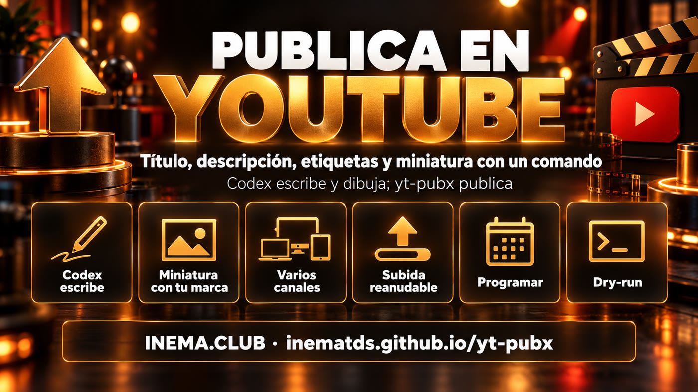

Tú indicas el video y das el contexto. Codex escribe el título, la descripción y las etiquetas y diseña el arte de la miniatura; yt-pubx aplica tu marca, publica en el canal correcto y te devuelve el enlace.
yt-pubx es un programa de línea de comandos que publica videos en YouTube por ti. Está pensado para quien publica con frecuencia, en uno o varios canales, y no quiere llenar a mano el título, la descripción, las etiquetas y la miniatura cada vez. A partir de un texto corto o de los subtítulos del video, Codex CLI escribe los textos y crea el arte de la miniatura, y yt-pubx envía todo mediante la API oficial de YouTube. Para usarlo necesitas Python, Codex CLI con sesión iniciada y un proyecto gratuito en Google Cloud con la YouTube Data API habilitada.
Qué es
Del archivo al video publicado, sin abrir Studio
Un único archivo Python. La configuración y los tokens se quedan en tu máquina.

✍️ Codex escribe
Título de hasta 90 caracteres, descripción con puntos y solo los enlaces que tú pasaste, etiquetas, y la frase y la escena de la miniatura. Todo con tu suscripción de Codex, sin clave de API de modelo.
🖼️ Miniatura con tu marca
El arte sale del generador de imágenes de Codex; yt-pubx oscurece el lado del texto y aplica la frase, la etiqueta de la marca y los colores definidos para cada canal.
📺 Todos los canales que quieras
Cada canal es un bloque en el config.json y un yt-pubx auth. Elige con --canal; sin él, va al canal predeterminado.
Cómo funciona
Cinco etapas, una línea de comandos
Con --dry-run se detiene antes del envío y muestra todo; con --plano publica exactamente lo que revisaste.
Video (archivo o enlace)→Codex: título, descripción, etiquetas→Codex image_gen: arte→Miniatura con la marca del canal→Subida + miniatura + subtítulos
Entrada
Archivo local, enlace directo a .mp4 o enlace de YouTube, TikTok, Instagram (descargado con yt-dlp, o con el comando que configures).
Envío
Subida reanudable en bloques de 16 MB con reintentos. Público, no listado, privado o programado con --agendar.
Registro
Cada envío genera una carpeta con plano.json, la miniatura y el arte, y una línea en historico.jsonl.
Requisitos previos
Lo que necesitas en la máquina
Linux, macOS o Windows (WSL). Nada queda en un servidor de terceros.
Python + ffprobe
Python 3.10 o más reciente, con requests y Pillow; ffprobe viene con ffmpeg.
pip install requests pillow
ffprobe -version
Codex CLI
Con sesión iniciada en tu cuenta de ChatGPT. Es el que escribe los textos y diseña el arte.
npm i -g @openai/codex
codex login
Google Cloud
Proyecto gratuito con la YouTube Data API v3 habilitada y un ID de cliente de OAuth del tipo "App de escritorio" (paso 2 de la guía).
# opcional, para enlacespip install yt-dlp
Guía de uso · paso a paso
De cero al primer video publicado
Los pasos 2 a 4 se hacen una vez por canal. Después, publicar es solo el paso 5.
1
Instala y crea la configuración
Clona el repositorio, deja el comando en el PATH y genera el archivo de ejemplo en ~/.config/yt-pubx/config.json.
En console.cloud.google.com: crea un proyecto; en APIs y servicios → Biblioteca habilita la YouTube Data API v3; en la Pantalla de consentimiento de OAuth elige "Externo" y agrega el correo de la cuenta dueña del canal como usuario de prueba (Usuarios de prueba); en Credenciales → Crear credenciales → ID de cliente de OAuth elige App de escritorio y descarga el JSON.
# guarda el JSON fuera de cualquier repositoriomv ~/Downloads/client_secret_*.json ~/.config/yt-pubx/
3
Describe el canal en el config
Nombre, una frase sobre el canal (le da el tono a los textos), la línea que cierra cada descripción y la identidad de la miniatura.
Abre el navegador; entra con la cuenta dueña del canal y acepta. El token queda en ~/.config/yt-pubx/tokens/ con permiso 600. Para otro canal, crea otro bloque y repite con su nombre.
yt-pubx auth principal --client-secret ~/.config/yt-pubx/client_secret_XXXX.json
yt-pubx canais# * principal Mi Canal ... ok
5
Revisa antes de enviar
El --dry-run genera título, descripción, etiquetas y miniatura y muestra todo sin publicar. Abre la thumb.jpg de la carpeta indicada.
El --plano reutiliza el texto y el arte, sin generarlos de nuevo. Puedes cambiar solo la frase de la miniatura. Al final aparecen el enlace del video y el de Studio.
yt-pubx publicar aula.mp4 --plano ~/.local/share/yt-pubx/trabalhos/<carpeta>/plano.json \
--frase-thumb "De cero al aire"# URL: https://www.youtube.com/watch?v=...
7
Variaciones útiles
Otro canal, enlace en lugar de archivo, programación, o todo a mano sin Codex.
yt-pubx publicar https://exemplo.com/video.mp4 --canal segundo --contexto "..."yt-pubx publicar video.mp4 --contexto "..." --agendar "2026-12-01 18:00"yt-pubx publicar video.mp4 --title "..." --description "..." --tags "a,b" --thumb capa.jpg
yt-pubx atualizar https://www.youtube.com/watch?v=XXXXXXXXXXX --description-arquivo descricao.txt # edita un video ya publicado
8
Deja que un agente lo haga por ti
Pon esta instrucción en el CLAUDE.md o AGENTS.md de tu agente; después basta con pedir "publica este video en el canal X".
# Publicar video en YouTube
Reúne el contexto (tema, enlaces oficiales, SRT), ejecuta
yt-pubx publicar <video> --contexto "..." --dry-run, abre la thumb.jpg,
revisa título y descripción y publica con --plano <carpeta>/plano.json.
⚠️ Trampas de Google
App en modo de prueba: el acceso expira en 7 días; publica la app en la pantalla de consentimiento para que no expire. Proyecto sin auditoría: YouTube puede bloquear como privados los videos de proyectos nuevos hasta la auditoría de los servicios de API de YouTube (gratuita). Cuota: 10.000 unidades por día; cada envío consume buena parte. Miniatura personalizada: requiere canal verificado por teléfono.
Ejemplos
La misma herramienta, identidades distintas
Arte de Codex image_gen, frase y marca aplicadas por yt-pubx con los colores de cada canal.
Canal con etiqueta amarilla y realce rojo: video sobre usar dos IA juntas.Otro canal, otra marca y otro color, con la misma línea de comandos y solo un --canal distinto.
Roadmap
Dónde está y hacia dónde va
Lo que ya funciona hoy y lo que puede venir.
2.0
Herramienta independienteConfig propia, canales ilimitados, OAuth con yt-pubx auth, compositor de miniaturas, --dry-run y --plano, programación, subtítulos SRT.
Próximo
Listas de reproducción y capítulosAgregar el video a una lista de reproducción y armar capítulos a partir de los subtítulos.
Después
LotePublicar una carpeta entera con un único dry-run para revisar todas las miniaturas lado a lado.